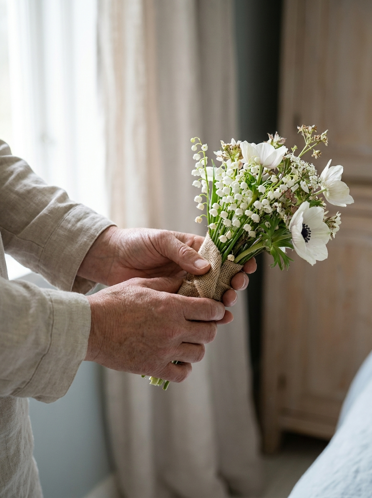

Planlegging av seremoni
Vi planlegger seremonien sammen — i kirke, kapell, gravlund eller hjemme. Musikk, blomster, taler, program — vi sørger for at alt henger sammen, og at dere kan være tilstede uten å bære det praktiske.
Les merVi hjelper deg å skape en seremoni som er trofast mot den du har mistet, og gir rom for dem som er igjen.
Ta kontakt i roEt dødsfall snur hverdagen på hodet. Mens sorgen er fersk, kommer det også mange praktiske spørsmål — papirer, valg, frister, mennesker som skal varsles. Vi tar oss av det vi kan, så du får tid til det som er viktigst.
Minnero er et lite, lokalt byrå. Det betyr at den samme personen følger dere fra første samtale til siste hilsen — og at vi tar oss tid.
Vi planlegger seremonien sammen — i kirke, kapell, gravlund eller hjemme. Musikk, blomster, taler, program — vi sørger for at alt henger sammen, og at dere kan være tilstede uten å bære det praktiske.
Les merVi tar oss av valg av kiste eller urne, transport, kremasjon, og praktisk gjennomføring av selve gravferden. Vi følger dere gjennom alle valg uten å forhaste — og forklarer hva hvert valg innebærer.
Les merEt minnesamvær er en god anledning til å samles i ro etter seremonien. Vi hjelper med lokaler, servering, dekorasjon og program — og kan også arrangere mindre samvær hjemme hos dere.
Les merSkifte, arvespørsmål, melding til offentlige instanser, oppsigelse av abonnementer og forsikringer. Vi loser dere gjennom papirarbeidet — og henviser videre til advokat når noe krever det.
Les mer
Når noen går bort, trenger man ikke vite alt med en gang. Den første samtalen vår handler ikke om valg og frister — den handler om å bli kjent med den dere har mistet, og om å gi dere et bilde av hva som ligger foran.
Etter den samtalen kan vi ta tingene i den rekkefølgen som passer dere — én ting av gangen.
Vi er to gravferdskonsulenter som har valgt å holde byrået lite. Det betyr at den samme personen følger dere hele veien, og at vi har tid til å lytte før vi planlegger.
Vi tror at en verdig avskjed begynner med en stille samtale — og fortsetter med trygg, lokal håndverksstolthet i alle små valg.
Les mer om ossOm du nettopp har mistet noen, eller bare ønsker en uforpliktende samtale — ring oss eller send oss en stille melding. Vi ringer tilbake i ro.
+47 73 00 00 00 Døgnvakt — alle dagerFaktiske bestillinger gjøres ved personlig samtale. Ta kontakt på telefon eller e-post, så møtes vi i ro — hjemme hos dere eller hos oss.
Du kan også skrive til oss på post@minnero.no
Dette er en demo — Vipps-betaling aktiveres når din konto er satt opp.